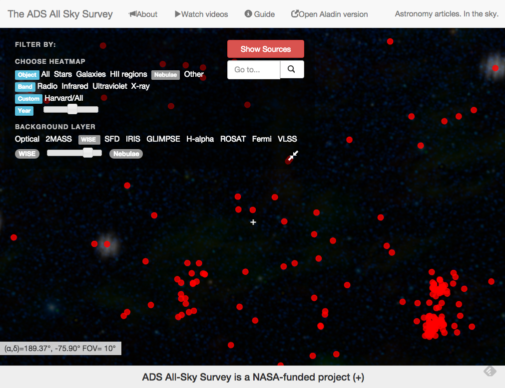

The ADS All Sky Survey has turned the NASA Astrophysics Data System (ADS), widely known for its unrivaled value as a literature resource for astronomers, into a data resource. The project began as a single interface, using Aladin Lite to visualize the literature heatmaps. A version of ADSASS was subsequently implemented in WorldWide Telescope, to leverage its capabilities for fading between multiple image layers.